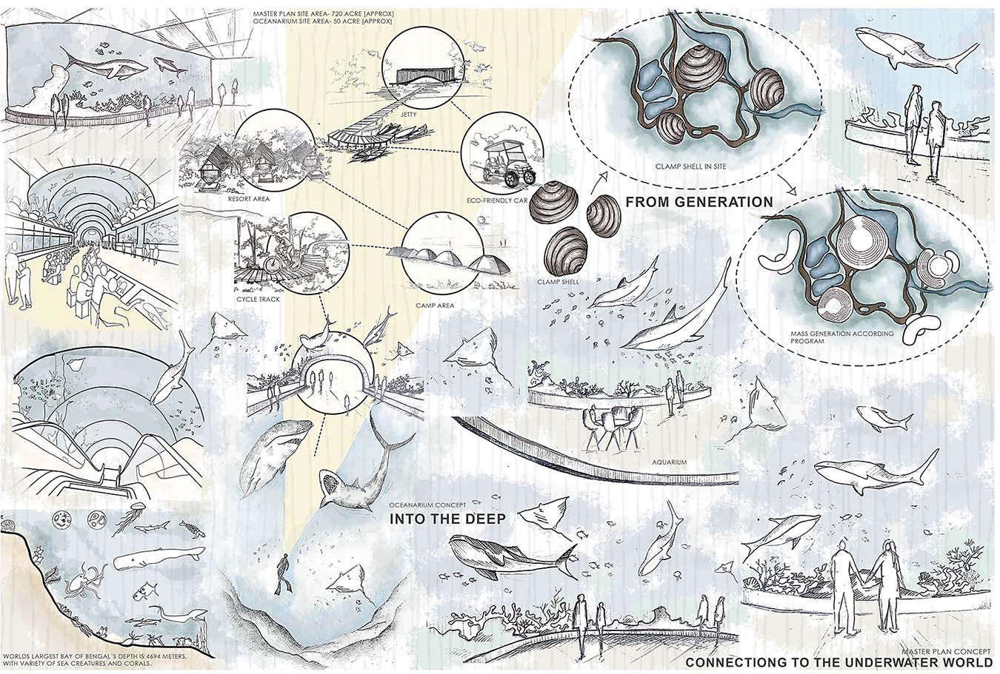
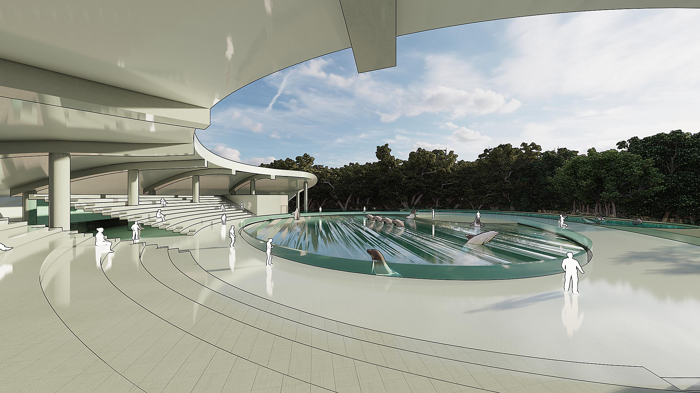

Exploring to the Deep: An Oceanarium Complex

© Afra Anjum Suchana | AUST

Site Location © Afra Anjum Suchana | AUST
About Sonadia Island:
Located at Kutubjom Union in Maheshkhali Upazila, 15 km north-west of Cox's Bazar District Headquarters. latitude 21.28˝-21.33˝ and longitude 91.50˝-91.56˝. People started to live here only 100-150 years ago and average only 2,000 people here today. The Dip is divided into two areas including East and West and west is comparatively densely populated. The island consists of 2 mosques, 1 primary school, 1 cyclone center, and nearly 12 deep Tube Well. In the winter season, the island is full of dry fish activities and this is the primary income source of the people on this island. The Island is full of Salt Water. For this reason, it is not possible to grow any crops or vegetables here. Blue sea on three sides, red crab, kea forest, all in all Sonadia Island holds the unique beauty of nature. Various guest birds and water birds can also be seen here and that’s why this island is called the heaven of birds . The sunset here is more mesmerizing. This island can be best for camping.

Site Analysis © Afra Anjum Suchana | AUST

Site Surroundings & Site Forces © Afra Anjum Suchana | AUST

Map Analysis © Afra Anjum Suchana | AUST

Morphology Analysis © Afra Anjum Suchana | AUST
Concept:
"Connecting to the underwater world"
One's final destination will be this island's oceanarium (The Underwater World)
“Into the deep”
The main concept of the project comes from the depth of the Bay of Bengal.
{kind=link}
Concept © Afra Anjum Suchana | AUST
Design Breif (Island Master Plan)
The island has three entrance points for security, two from the waterway from Moheshkhali and Cox's Bazar and one is from the Jila road of Maheshkhali. The roadway is also used as a service way where for the site service there is a service and utility block. One can enjoy the site with eco-friendly cars. The rest of the site I planned as a park where people can Roaming and get some facilities such as campaign, tracking ( because at present this island is famous for campaign and tracking), some kiosks, pavilions, a watch tower, resorts, public gathering space and the oceanarium. Anyone interested in staying here can stay in the resort or the camp. The project took a lot of analysis [ site analysis, climate analysis, existing situation and animal analysis, tree analysis, birds analysis, Bay of Bengal’s fish analysis, aquarium pattern and type analysis, material analysis and so on ] based on what an aquarium is and what its uses are. Sea creatures are now endangered due to mankind's pollution. Their natural habitat is polluted and a lot of them are becoming extinct. So we have to preserve them and let the world know about their existence.

Master Plan © Afra Anjum Suchana | AUST
Design Brief (Main Master Plan)
The site was chosen for its close proximity to the ocean due to the large water supply required to maintain the Aquarium exhibits. In order to achieve these goals, the project had to be approached with many factors in mind, such as aesthetically, mechanically, structurally, etc. In the main oceanarium complex when one enters the entry mass has some options such as an oceanarium, marine biology research center, museum, dolphinarium, serpentarium, trail with a watch tower, recreational facilities, outdoor exhibition, and other facilities to conserve and promote marine life and landscape. There have been dolphin shows in the dolphinarium three times.

Site Plan © Afra Anjum Suchana | AUST
Also, public functions will be provided to encourage tourists and local people to blend in with the activities and enjoy nature. Oceanariums also contribute to conservation efforts by raising awareness about marine biodiversity and ecosystem protection. The journey inside the aquarium will be exciting for a visitor and also they will be able to learn a lot about sea creatures that will help them value marine life.

Floor Plan © Afra Anjum Suchana |AUST
In the main aquarium after entering people will see freshwater aggressive fishes. Then he will go to the 3rd floor and feel the sea animals from the upper level to the deep coral reefs and creatures. There are different types of galleries and tanks such as jellyfish, coral reefs, coral creatures, freshwater fishes, shark tanks, sea horses, octopus squid, aggressive fish, tunnels, bay windows, and so on. Again there is also a service room for every tank, service floor, and staff room. Medical room, food preparation space, food storage, observation room, pump room, water reservoir, service corridor, emergency exit, theater, kids zone, game zone, and so on. One can visit the whole complex in 4 to 5 hours.

Outdoor Visualization © Afra Anjum Suchana | AUST
Technical Information:
The whole complex will be naturally ventilated excluding the admin, labs, main aquarium complex, and serpentarium. The aquarium galleries are supported by machine and service rooms in the back. The machines will also support the building from below and underneath every floor. The main tank [bay of Bengal tank] services come from the top [ where food is given and checkups and cleaning are done and the bottom where the filtration rooms and other types of machinery are put down. The center floors are for food preparation, storage, and medical service for the main tank's fishes. the main tank water comes from direct deep sea with large pipes and after 1st time filled up with a small dia pipe, the pipe everyday evaporates 3% of the tank water for cleanliness and to balance the temperature, oxygen and other chemicals of seawater. There will be lighting and a heating system in the fish galleries. There will also be a water filtration system along with water pressure balancing systems. there is also a water reservoir for natural calamities.

Aquarium Exploded Diagram and Plan © Afra Anjum Suchana | AUST

Aquarium Section © Afra Anjum Suchana | AUST

Bay Window © Afra Anjum Suchana | AUST

Main Tank © Afra Anjum Suchana | AUST

Connection Between 1st and 2nd Floor © Afra Anjum Suchana | AUST

Full Height Aquarium © Afra Anjum Suchana | AUST
{kind=link}
Tunnel © Afra Anjum Suchana | AUST

3rd Floor Aquarium © Afra Anjum Suchana | AUST

Connection Between 2nd and 3rd Floor © Afra Anjum Suchana | AUST

Aquarium Interior © Afra Anjum Suchana | AUST

Museum Floor Plan © Afra Anjum Suchana | AUST

Entry Massing © Afra Anjum Suchana | AUST

Research Center © Afra Anjum Suchana | AUST
The research center has a dormitory, visually connected with the oceanarium, people can see the outdoor research but can't go there. It is only for researchers and research students. The dorm is north-south facing with a full sea view and cross ventilation. The labs are mechanically controlled because of the temperature room for various sea creatures. Labs are connected with service corridor technical and mechanical corridors. There are separate service entries and vertical circulation. On the 2nd floor, there is a seminar room and library and the 1st floor has a restaurant for the researchers.
{kind=link}
Dolphinarium © Afra Anjum Suchana | AUST

Outdoor Visualization © Afra Anjum Suchana | AUST

South-East Elevation & Section © Afra Anjum Suchana | AUST

Site Model Photographs © Afra Anjum Suchana | AUST

Main Model Photographs © Afra Anjum Suchana | AUST
SIMILAR POST

A Vernacular Architectural Learning Centre
Lorem, ipsum dolor sit...

Design of A Commercial High-rise Building
Lorem, ipsum dolor sit...

Design of a Traditional Community School
Lorem, ipsum dolor sit...

Design of An Exhibition Center
Lorem, ipsum dolor sit...
RECENT UPDATES
A Vernacular Architectural Learning Centre
23 November, 2023
Design of A Commercial High-rise Building
19 November, 2023
Design of a Traditional Community School
25 September, 2023
Design of An Exhibition Center
10 September, 2023
MOST VISITED
Design of A Commercial High-rise Building
19 November, 2023 || Total views: 28

Paramount Concord
7 August, 2023 || Total views: 19

Iqbal Residence
7 August, 2023 || Total views: 18

Design of E-commerce Museum
7 August, 2023 || Total views: 13